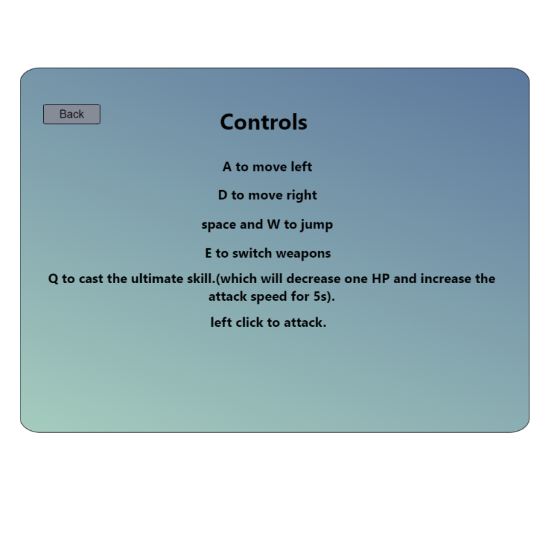

Roy’s Revenge
Game Design Document
INTRODUCTION
This document describes a game called “Roy’s Revenge”, which is designed to be a simple, 2D side-scroller and constructed game and the game is trying to tell players the story of Roy. The game will employ sprite-based animation, tiled backgrounds, collision detection, physics, AI, side scrolling & gravity, efficient memory management, render threading, and more basic 2D game techniques.
TECHDNOLOGY
Roy’s Revenge will be developed for the Windows Platform using the McKilla's Gorilla game engine called Wofie-2D, which is a bare-bones engine developed by Richard McKenna for rapid prototyping 2D games. DirectX will be used as the underlying rendering technology. XACT will be used for all music and sound effects management.
BACK STORY
Roy is a robot created by Dr. G that is used to help people in daily lives. Dr. G is a nice, intelligential man who hopes robots can help people live better and be friends with people. Roy is the first robot Dr. G created. Roy is more like a son to Dr. G, unlike other robots, Roy has emotions, and this is the gift Dr.G gives him as the first robots. Another intelligential scientist Dr. K has the opposite opinion with Dr. G, he hopes robots can be weaponized and become war machines. However K’s idea is strongly opposed by Dr. G. Dr. K is very angry that Dr. G was trying to stop him, so he sends his armed robots to catch Dr. G to his laboratory, however, Dr. G was accidentally killed by the weaponized robots, when Roy discovered that Dr. G was dead, he was very sad and then he started his journey of revenge.
OBJECTIVE
Dr. K is in his laboratory, and there are all kinds of different traps and weaponized robots that were created by Dr. K, and Roy need to avoid these traps, kill these robots and try to find Dr. K.
GAMEPLAY
Each Level has a lot of traps and enemies. Player needs to get to the end of the level to enter the next level, when he finishes a level, he will get a new weapon or new technology.
At first, the player will get a knife(1 damage).
After level 1, Roy can get a pistol(1 damage, lower attack speed).
After level 2, Roy can get the technology to let him double jump.
After level 3, Roy can get a machine gun(1 damage, faster attack speed).
After level 4, Roy can get a lightsaber(2 damages).
After level 5, Roy can get a laser Gun(2 damage).
Level 6 will be the boss, the game ends after defeating the boss.
Roy’s max health is 3, and enemies will drop health packs randomly.
There are different types of enemies
- meleed rebot hp:2 equipment:knife
- ranged rebot hp:1 equipment:pistol
- meleed armored rebot hp:3 equipment:knife
- ranged armored robot hp:2 equipment:pistol
There are different types of platforms.
A sticky platform will decrease the speed and jump height of the player.
An accelerated platform will accelerate the speed of the player.
There are different types of traps.
Laser traps will kill players immediately, and this can be closed by a certain switch.
SpikeTrap will kill players immediately, and the player can avoid them by jumping over them.
CONTROLS
A to move left
D to move right
space and W to jump
E to switch weapons.
Q to cast the ultimate skill.(which will decrease one HP and increase the attack speed for 5s).
left click to attack.
GRAPHICAL USER INTERFACE
- Splash Screen - The splash screen will contain the game logo and a message “ Click to Begin”, and users can click anywhere to enter the main menu screen.

- Main Menu - In this screen, Players can start a new game as well as go to levels selection screen, a controls screen, and a help screen.

- Levels Selection Screen - In this screen, players can select any levels they passed, and play the selected level.

- Controls Screen - This screen will show players the play instructions, and how they can control Roy.

- Help Screen - this screen will tell the backstory for the game, including explaining about any important characters. It will also specify the game developers are and finally, list all of your cheat codes here.

- In-Game Menu - While the game is in progress, we'll always press ESC to pause the game and open the game menu that allows the player to select from the following options:
- Resume Game - If pressed, it will produce the same effect as the ESC key Which will resume Game, and In-Game Menu will be closed.
- New Game - If a game is in progress, first we'll pop up a dialog to make sure the user really wants to quit the current game. If we conclude the user really wants to start a game, then the game state is reset and begun.
- Controls - If pressed, the game will display an info screen that includes a description of all game controls.
- Help - If pressed, the game will display the help screen which has some information about the game author, some backstory about the game, and some cheat codes.
- Main Menu - If pressed, the game program will return back to the main menu.

- In-Game GUI - While playing the following will be displayed at all times:
- Level Number
- Health Points
- Utimate Skill Cool Down
- Killing Points
ARTWORK
All artwork in the game will be original.
- Roy - Each will require animations for:
- Idle
- Walking Right
- Walking Left
- Jumping Right
- Jumping Left
- Jumping Up
- Attacking Left
- Attacking Right
- Taking Damage
- Dying
- Enemies - There are 4 types of enemy, each type will require animations for:
- Idle
- Walking Right
- Walking Left
- Jumping Right
- Jumping Left
- Jumping Up
- Attacking Left
- Attacking Right
- Taking Damage
- Dying
- Boss - Each will require animations for:
- Idle
- Walking Right
- Walking Left
- Attacking Left
- Attacking Right
- Taking Damage
- Dying
- Knife
- Pistol
- Machine Gun
- Light Saber
- Laser Gun
- Upgrade Package
- Switches
- Ceiling, Floor, Traps & Wall Tiles - The test chamber will have multiple floors and platforms to jump onto and off of. We'll use simple tiles for all walkable/collidable surfaces. These tiles will have to clearly define where the walkable surface is. We'll use several different surfaces which were introduced before.
- Chamber Background Tiles - For non-collidable tiles that will go in the background of the chamber.
SOUND EFFECTS
All sound effects will be original. Sounds must be made to coincide with each of the following events:
- Jumping
- Landing on a Platform
- Shooting
- Slashing
- Taking Damage
- Dying
- Celebrating Clearing a Level
MUSIC
Game Music will be added when time permits.